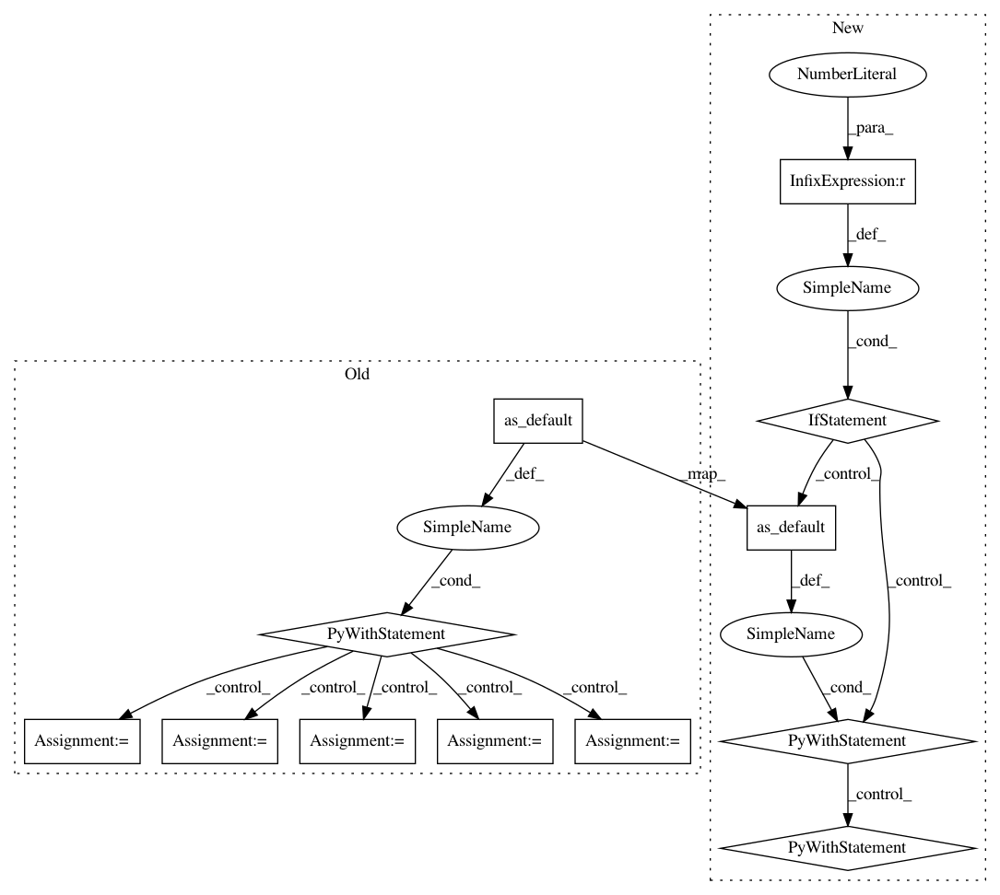

38a44c32894824fa4b2a46f6f5d03f3eae7b467d,mesh_tensorflow/experimental/model_executor.py,,_eval_phase,#Any#Any#Any#Any#Any#,308
Before Change
Evaluate network and write summary.
with tf.Graph().as_default():
summary_writer = tf.contrib.summary.create_file_writer(FLAGS.summary_dir)
with summary_writer.as_default(), (
tf.contrib.summary.always_record_summaries()):
// Setup input pipeline.
ds_creator = unet.get_dataset_creator("eval")
mtf_shapes = unet.get_input_mtf_shapes("eval")
simd_input_reader = input_reader.SimdMeshImplInputReader(
mesh_impl, ds_creator, mtf_shapes, is_eval_mode=True)
model_eval_fn, eval_hooks = _get_model_fn(
"eval", cpu_devices, d_assignment, num_hosts)
tpu_eval_computation = tpu.replicate(
computation=model_eval_fn,
inputs=[[]] * num_cores,
infeed_queue=simd_input_reader.infeed_queue,
device_assignment=d_assignment)
//////////////////////////////////////////////////////////////////////////////////////////////////////////////////////
// Evaluation.
master_to_slice_hook, _ = eval_hooks.get()
ckpt_loader_hook = _CkptLoaderHook()
flush_summary = tf.contrib.summary.flush()
with tf.train.MonitoredSession(
session_creator=tf.train.ChiefSessionCreator(
master=FLAGS.master,
config=tf.ConfigProto(allow_soft_placement=True)),
hooks=[ckpt_loader_hook, master_to_slice_hook]) as sess:
simd_input_reader.start_infeed_thread(
sess, FLAGS.num_eval_iterations_per_loop)
results = []
for step in range(FLAGS.num_eval_iterations_per_loop):
// Only get results from the 0-th core.
results.append(sess.run(tpu_eval_computation)[0])
sess.run(flush_summary)
tf.logging.info("eval steps: {}".format(step))
unet.postprocess(results, FLAGS.pred_output_dir)
def _shutdown():
with tf.Session(target=FLAGS.master,
config=tf.ConfigProto(allow_soft_placement=True)) as sess:
sess.run(tpu.shutdown_system())
After Change
def _eval_phase(mesh_impl, cpu_devices, d_assignment, num_hosts, num_cores):
Evaluate network and write summary.
if FLAGS.num_eval_iterations_per_loop <= 0:
return
def _run_eval_phase():
The real function that runs the evaluation phase.
// Setup input pipeline.
ds_creator = unet.get_dataset_creator("eval")
mtf_shapes = unet.get_input_mtf_shapes("eval")
simd_input_reader = input_reader.SimdMeshImplInputReader(
mesh_impl, ds_creator, mtf_shapes, is_eval_mode=True)
model_eval_fn, eval_hooks, output_dtypes_shapes = _get_model_fn(
"eval", cpu_devices, d_assignment, num_hosts)
tpu_eval_computation = tpu.replicate(
computation=model_eval_fn,
inputs=[[]] * num_cores,
infeed_queue=simd_input_reader.infeed_queue,
device_assignment=d_assignment)
output_dtypes, output_shapes = output_dtypes_shapes.get()
outfeed_dequeue_ops = []
for host_id in range(num_hosts):
// pylint: disable=protected-access
with ops.device(input_reader._host_id_to_tf_device(
host_id, external_worker=True)):
for device_ordinal in range(num_cores // num_hosts):
outfeed_dequeue_op = tpu_ops.outfeed_dequeue_tuple(
dtypes=output_dtypes,
shapes=output_shapes,
device_ordinal=device_ordinal)
// We don"t need output other than from core 0.
if outfeed_dequeue_ops:
outfeed_dequeue_ops.append(
[tf.reduce_mean(x) for x in outfeed_dequeue_op])
else:
outfeed_dequeue_ops.append(outfeed_dequeue_op)
//////////////////////////////////////////////////////////////////////////////////////////////////////////////////////
// Evaluation.
master_to_slice_hook, _ = eval_hooks.get()
ckpt_loader_hook = _CkptLoaderHook()
if FLAGS.write_summary:
flush_summary = tf.contrib.summary.flush()
with tf.train.MonitoredSession(
session_creator=tf.train.ChiefSessionCreator(
master=FLAGS.master,
config=tf.ConfigProto(allow_soft_placement=True)),
hooks=[ckpt_loader_hook, master_to_slice_hook]) as sess:
if FLAGS.write_summary:
tf.contrib.summary.initialize(session=sess)
simd_input_reader.start_infeed_thread(
sess, FLAGS.num_eval_iterations_per_loop)
pprocessor = unet.PostProcessor()
for step in range(FLAGS.num_eval_iterations_per_loop):
// Only get results from the 0-th core.
sess.run(tpu_eval_computation)
results = sess.run(outfeed_dequeue_ops)[0]
pprocessor.record(results, FLAGS.pred_output_dir)
if FLAGS.write_summary:
sess.run(flush_summary)
tf.logging.info("eval steps: {}".format(step))
pprocessor.finish()
with tf.Graph().as_default():
if FLAGS.write_summary:
summary_writer = tf.contrib.summary.create_file_writer(FLAGS.summary_dir)
with summary_writer.as_default(), (
tf.contrib.summary.always_record_summaries()):
_run_eval_phase()
else:
_run_eval_phase()
In pattern: SUPERPATTERN
Frequency: 3
Non-data size: 12
Instances
Project Name: tensorflow/mesh
Commit Name: 38a44c32894824fa4b2a46f6f5d03f3eae7b467d
Time: 2019-09-05
Author: no-reply@google.com
File Name: mesh_tensorflow/experimental/model_executor.py
Class Name:
Method Name: _eval_phase
Project Name: CyberReboot/NetworkML
Commit Name: e2226f604c7f6444630be324d06a8130a01f3366
Time: 2018-01-22
Author: CStephenson970@gmail.com
File Name: NodeClassifier/utils/rnnclassifier.py
Class Name: AbnormalDetector
Method Name: __init__
Project Name: tensorflow/mesh
Commit Name: 38a44c32894824fa4b2a46f6f5d03f3eae7b467d
Time: 2019-09-05
Author: no-reply@google.com
File Name: mesh_tensorflow/experimental/model_executor.py
Class Name:
Method Name: _train_phase